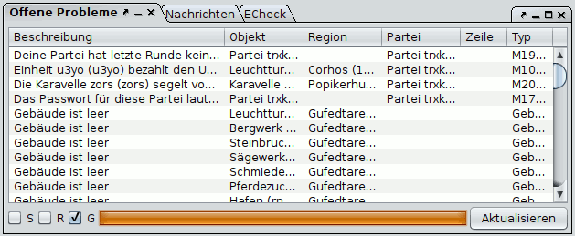

Open Tasks

In this list Magellan shows all problems it has recognized. This list can be used as a starting point for orders still to be edited. Please note that Magellan is not able to find and report all problems that may occur. Nevertheless, this is a powerful tool that makes other tools like ECheck redundant.
You can sort the problems by clicking on column headings. If you press control and then click on a different heading, you can sort by multiple columns.
There are further option for configuring shown problems at the bottom:
- S Show only problems from regions that are marked in the map. If there are no marked regions, this has no effect.
- R Show only problems of the currently active region.
- G Additionaly show global problems, which do not belong to a particular region.
- Refresh It can occasionally happen that problems are not calculated completely. You can re-start the calculation with this button.
By double-clicking a line you can jump to the affected unit or region if applicable.
You can configure the problems further with the context menu (right click on a line):
- Show full text (also by pressing CTRL and double clicking on a line): Shows the full text, which may not always fit into the table column.
- Select object Same as double click
- Refresh Same as the button
- Suppress problem This will hide this concrete problem for the report. This usually adds a special comment to the affected unit.
- Show hidden problems Shows all hidden problems again and removes the added comments
- Permanently ignore similar problems This suppresses all problems of a certain type also in future reports. This enables you to hide certain problems and concentrate on the important ones. For example, you may hide all warnings of empty buildings.
There are two major types of problems:
- Report messages, for example messages about buildings that have not been paid
- Messages created by Magellan, for example warnings of missing maintenance silver
You can view suppressed problem types in the option section for the Open Problems. You can also re-enable suppressed problem types there.